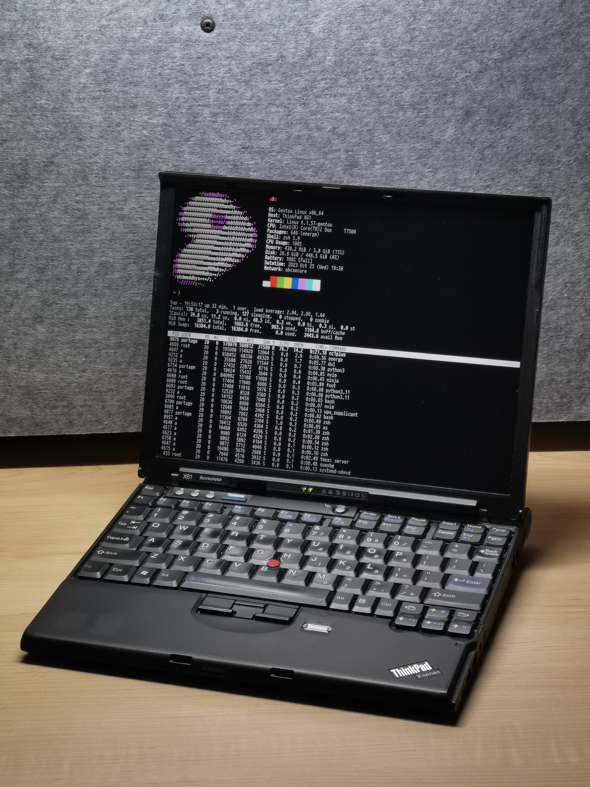
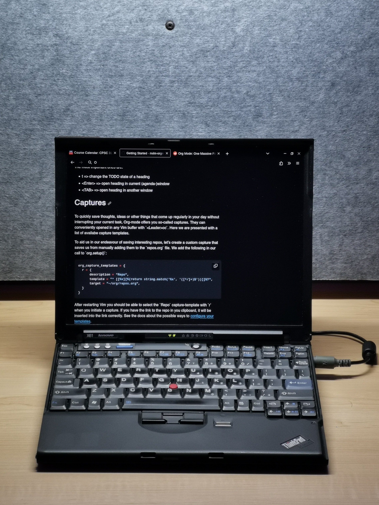

Builds
Some non-career-related projects I've worked on.Thinkpad X61



This is my main laptop for work as a student. Despite being released in 2006, it holds up surprisingly well. My typical workflow mostly consists of text editing (e.g. coding, typesetting), reading (pdfs), browsingthe web, and it's more than capable enough for light tasks such as these. It gets a battery life of around 5 hours of light usage, which is more than enough for attending lectures or for studying at the library. It's the last thinkpad to be designed by IBM (around when Lenovo acquired the brand), and is the best looking laptop of all time IMO.
Specs
- Intel Core 2 Duo T7500 (midrange).
- 8GB DDR2 RAM, upgraded from 2GB.
- 1400x1050 LED screen upgrade. It came with a terrible low-res TN panel.
- Intel 6E AX210 wifi card upgrade.